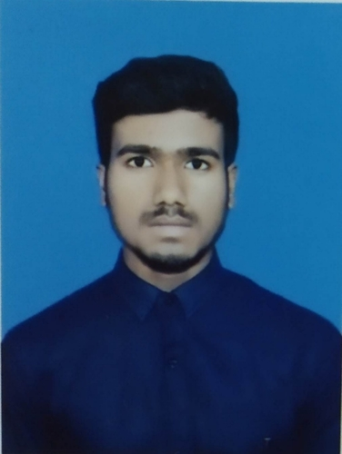

Shashi Mani

Objective
Master’s student in Computer Science and Engineering at IIT Tirupati with a strong foundation in full stack web development.
Looking for opportunities to apply my technical skills, learn from real-world projects, and contribute to impactful software solutions.
Education
- 10, KENDRIYA VIDYALAYA KANKARBAGH PATNA
90.4%
- 12, KENDRIYA VIDYALAYA KANKARBAGH PATNA
90.5
- B.Tech, BAKHTIYARPUR COLLEGE OF ENGINEERING PATNA
7.48 CGPA
- M.Tech, IIT TIRUPATI
5.94 CGPA(till 1st semester)
SKILLS
- Language: c,c++,python,SQL
- Full stack web development
- DBMS
- DSA
Projects
- MedBed: An android app that provides a single integreted platform that reduces friction between patient and hospitals and saves crucial time for both patients and hospitals.
- DepTrack: A VS code extension for front end and full stack javascript/Typescript developer that provides a single dashboard for checking all their dependencies and their versions.
Achievements
- Qualified GATE in 2024 in first attempt
- Doing M.Tech in computer Science and Engineering in IIT Tirupati
.